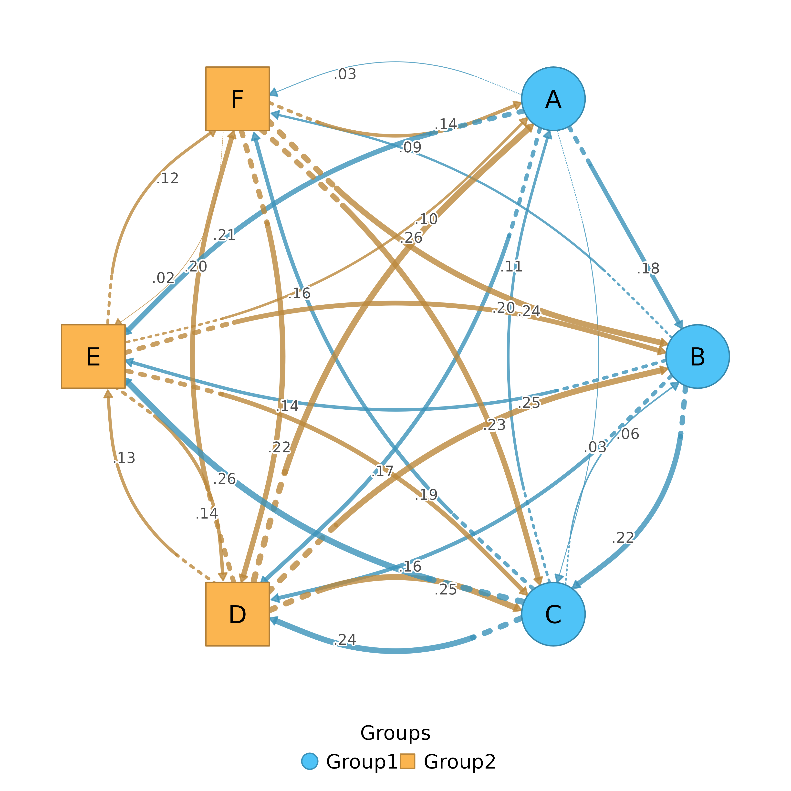
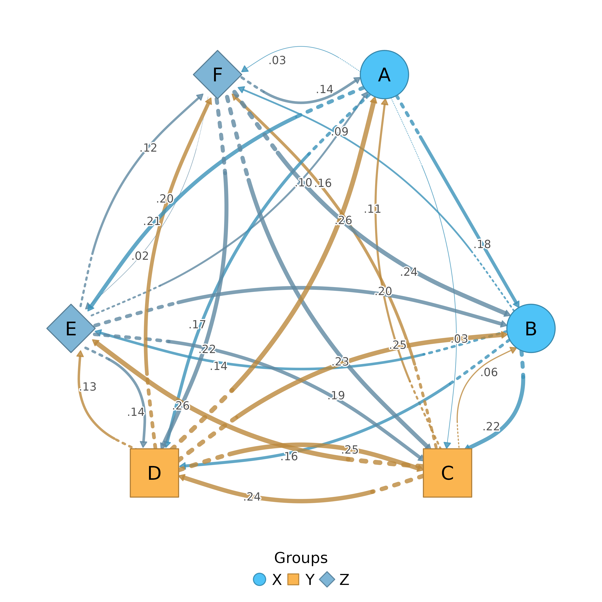
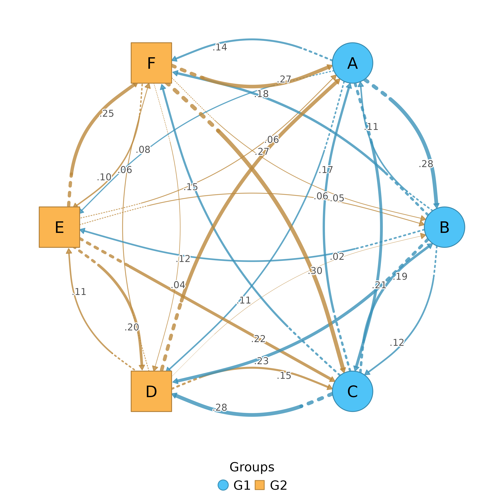

Plots a TNA model with nodes arranged in multiple groups using geometric layouts:
Circular: default for
layout = "auto", with groups on arcsBipartite: two vertical columns or horizontal rows for exactly 2 groups
Polygon: nodes along edges of a regular polygon for 3+ groups
Supports triangle (3), rectangle (4), pentagon (5), hexagon (6), and beyond.
Usage
plot_htna(
x,
node_list = NULL,
community = NULL,
layout = "auto",
use_list_order = TRUE,
jitter = FALSE,
jitter_amount = 0.8,
jitter_side = "first",
orientation = "vertical",
group1_pos = -2,
group2_pos = 2,
group_spacing = NULL,
node_spacing = NULL,
columns = 1,
column_spacing = NULL,
layout_margin = 0.15,
curvature = 0.4,
group1_color = "#4FC3F7",
group2_color = "#fbb550",
group1_shape = "circle",
group2_shape = "square",
group_colors = NULL,
group_shapes = NULL,
angle_spacing = 0.15,
edge_colors = NULL,
intra_curvature = NULL,
legend = TRUE,
legend_position = "bottom",
legend_horiz = NULL,
legend_ncol = NULL,
extend_lines = FALSE,
scale = 1,
nodes = NULL,
label_abbrev = NULL,
...
)
htna(
x,
node_list = NULL,
community = NULL,
layout = "auto",
use_list_order = TRUE,
jitter = FALSE,
jitter_amount = 0.8,
jitter_side = "first",
orientation = "vertical",
group1_pos = -2,
group2_pos = 2,
group_spacing = NULL,
node_spacing = NULL,
columns = 1,
column_spacing = NULL,
layout_margin = 0.15,
curvature = 0.4,
group1_color = "#4FC3F7",
group2_color = "#fbb550",
group1_shape = "circle",
group2_shape = "square",
group_colors = NULL,
group_shapes = NULL,
angle_spacing = 0.15,
edge_colors = NULL,
intra_curvature = NULL,
legend = TRUE,
legend_position = "bottom",
legend_horiz = NULL,
legend_ncol = NULL,
extend_lines = FALSE,
scale = 1,
nodes = NULL,
label_abbrev = NULL,
...
)Arguments
- x
A tna object, weight matrix, or cograph_network.
- node_list
Node groups can be specified as:
A list of character vectors (node names per group)
A string column name from nodes data (e.g., "groups")
NULL to auto-detect from columns named: groups, cluster, community, etc.
NULL with
communityspecified for algorithmic detection
- community
Community detection method to use for auto-grouping. If specified, overrides
node_list. Seedetect_communitiesfor available methods: "louvain", "walktrap", "fast_greedy", "label_prop", "infomap", "leiden".- layout
Layout type: "auto" (default), "bipartite", "polygon", or "circular". When "auto", uses the circular layout for any valid group count. "circular" places groups along arcs of a circle. Legacy values "triangle" and "rectangle" are supported as aliases for "polygon".
- use_list_order
Logical. Use node_list order (TRUE) or weight-based order (FALSE). Only applies to bipartite layout.
- jitter
Controls horizontal spread of nodes. Options:
FALSE (default) or 0: No jitter (nodes aligned in columns)
TRUE: Auto-compute jitter based on edge connectivity
Numeric (0-1): Amount of jitter (0.3 = spread nodes 30\
Named list: Manual per-node offsets by label (e.g., list(Wrong = -0.2))
Numeric vector of length n: Direct x-offsets for each node
Only applies to bipartite layout.
- jitter_amount
Base jitter amount when jitter=TRUE. Default 0.8. Higher values spread nodes more toward the center. Only applies to bipartite layout.
- jitter_side
Which side(s) to apply jitter: "first", "second", "both", or "none". Default "first" (only first group nodes are jittered toward center). Only applies to bipartite layout.
- orientation
Layout orientation for bipartite: "vertical" (two columns, default), "horizontal" (two rows), "facing" (both groups on same horizontal line, group1 left, group2 right, tip-to-tip), or "circular" (two facing semicircles with a gap between them). Ignored for non-bipartite layouts.
- group1_pos
Position for first group in bipartite layout. Default -2. Overridden by
group_spacingif specified.- group2_pos
Position for second group in bipartite layout. Default 2. Overridden by
group_spacingif specified.- group_spacing
Numeric. Distance between the two groups in bipartite layout. Overrides
group1_pos/group2_pos. For example,group_spacing = 6places groups at x = -3 and x = 3. Default NULL (uses group1_pos/group2_pos).- node_spacing
Numeric. Vertical (or horizontal) gap between nodes within a group. Default NULL (auto-computed from the largest group size). Increase for more space between nodes (e.g., 0.5 or 0.8).
- columns
Integer or vector of length 2. Number of sub-columns per group. A single value applies to both groups. A vector of 2 sets columns per group independently (e.g.,
c(2, 1)puts the first group in 2 columns). Nodes are distributed evenly across sub-columns. Default 1.- column_spacing
Numeric. Horizontal distance between sub-columns within a group. Default NULL (auto:
node_spacing * 2).- layout_margin
Margin around the layout (0-1). Default 0.15. Increase if labels or self-loops are clipped at the edges.
- curvature
Edge curvature amount. Default 0.4 for visible curves.
- group1_color
Color for first group nodes. Default "#4FC3F7".
- group2_color
Color for second group nodes. Default "#fbb550".
- group1_shape
Shape for first group nodes. Default "circle".
- group2_shape
Shape for second group nodes. Default "square".
- group_colors
Vector of colors for each group. Overrides group1_color/group2_color. If NULL, two-group layouts use group1_color/group2_color and 3+ group layouts use the built-in group color palette.
- group_shapes
Vector of shapes for each group. Overrides group1_shape/group2_shape. If NULL, two-group layouts use group1_shape/group2_shape and 3+ group layouts use the built-in group shape palette.
- angle_spacing
Controls empty space at corners (0-1). Default 0.15. Higher values create larger gaps in polygon and circular layouts. For circular auto layout, the default is increased to 0.35 unless explicitly set.
- edge_colors
Vector of colors for edges by source group. If NULL (default), uses darker versions of group_colors. Set to FALSE to use default edge color.
- intra_curvature
Numeric. Curvature amount for intra-group edges (edges between nodes in the same group). When set, intra-group edges are drawn separately with curves that arc away from the opposing group. Default NULL (intra-group edges drawn normally by splot). Typical values: 0.3 to 1.0.
- legend
Logical. Whether to show a legend. Default TRUE.
- legend_position
Position for legend: "topright", "topleft", "bottomright", "bottomleft", "right", "left", "top", "bottom". Default "bottom".
- legend_horiz
Logical. Force horizontal (TRUE) or vertical (FALSE) legend. NULL (default) auto-selects: horizontal for "top"/"bottom" positions, vertical otherwise.
- legend_ncol
Integer. Number of columns when the legend is vertical. NULL (default) lets
graphics::legendpick. Ignored when the legend is horizontal.- extend_lines
Logical or numeric. Draw extension lines from nodes. Only applies to bipartite layout.
FALSE (default): No extension lines
TRUE: Draw lines extending toward the other group (default length 0.1)
Numeric: Length of extension lines
- scale
Scaling factor for spacing parameters. Use scale > 1 for high-resolution output (e.g., scale = 4 for 300 dpi). This scales polygon/circular radius and legend sizing; bipartite group positions are controlled by
group1_pos,group2_pos, andgroup_spacing. Default 1.- nodes
Node metadata. Can be:
NULL (default): Use existing nodes data from cograph_network
Data frame: Must have
labelcolumn for matching; iflabelscolumn exists, uses it for display text
Display priority:
labelscolumn >labelcolumn (identifiers).- label_abbrev
Label abbreviation: NULL (none), integer (max chars), or "auto" (adaptive based on node count). Applied before passing to tplot.
- ...
Additional parameters passed to tplot().
Examples
# Create a 6-node network
mat <- matrix(runif(36, 0, 0.3), 6, 6)
diag(mat) <- 0
colnames(mat) <- rownames(mat) <- c("A", "B", "C", "D", "E", "F")
# Bipartite layout (2 groups)
groups <- list(Group1 = c("A", "B", "C"), Group2 = c("D", "E", "F"))
plot_htna(mat, groups)

# Polygon layout (3 groups)
groups3 <- list(X = c("A", "B"), Y = c("C", "D"), Z = c("E", "F"))
plot_htna(mat, groups3)

set.seed(1)
mat <- matrix(runif(36, 0, 0.3), 6, 6); diag(mat) <- 0
colnames(mat) <- rownames(mat) <- LETTERS[1:6]
groups <- list(G1 = LETTERS[1:3], G2 = LETTERS[4:6])
htna(mat, groups)
